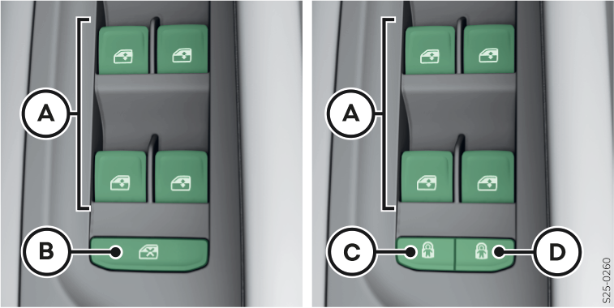

Boutons de commande dans la porte du conducteur

Selon l'équipement du véhicule :
Boutons de lève-vitre
Désactivation/activation des touches dans les portières arrière
Désactivation/activation du bouton dans la portière arrière gauche (composant de la sécurité enfant à commande électrique) Sécurité enfants dans la porte
Désactivation/activation du bouton dans la portière arrière droite (composant de la sécurité enfant à commande électrique) Sécurité enfants dans la porte